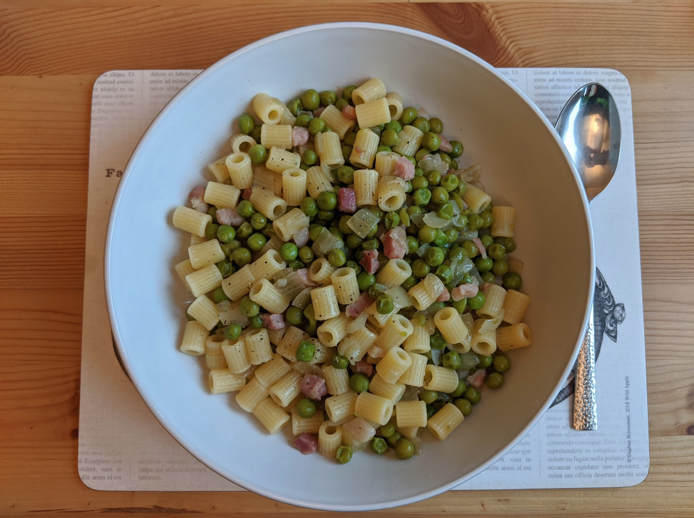

Pasta with peas
always a good idea.

Ingredients
- 350g ditaloni or conchiglie
- 300g peas (frozen is fine)
- 2 medium onions
- 150g pancetta
- Black pepper
- Olive oil
Instructions
- Dice up onion and fry in some olive oil, adding in pancetta once onion has browned.
- After 5 minutes or so, add in peas and a little water and allow to simmer (season at this
point).
- Boil the pasta water and cook the pasta as per the required time, remembering to salt the water
once the pasta is in.
- Once pasta is cooked, add it to the peas mix and add more olive oil and black pepper to taste.
Serves 4.